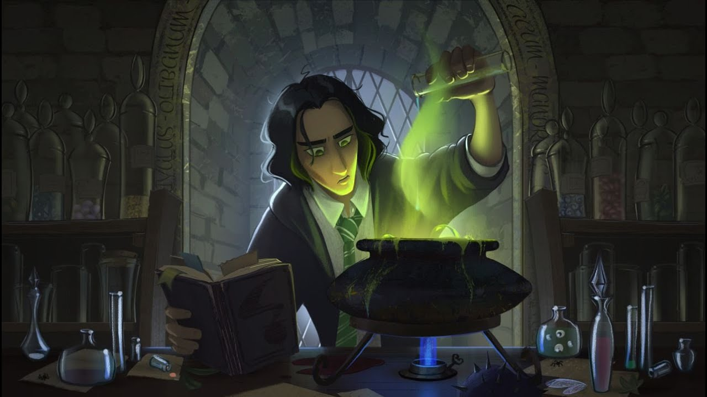
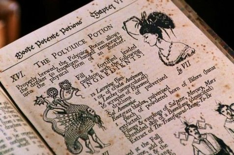
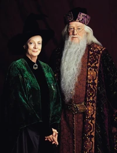

Для Гаррі Поттера дисципліну Трансфігурація викладала Мінерва Макґонеґел, яка відповідально відносилася до своїх обов'язків та вважала свій предмет одним із найскладніших у школі, а отже, потребувала від учнів ідеальної дисципліни.
Трансфігурація — це потужний процес перетворення, зазвичай пов'язаний з розвитком особистості, навчанням та змінами у свідомості. У контексті викладання, трансфігурація може означати глибоке перетворення знань і досвіду студента через нові підходи до навчання, інтерактивні методики та персоналізовані програми.



Цей процес сприяє активному залученню студентів, дозволяючи їм не лише отримувати інформацію, а й переосмислювати її, інтегруючи у власний досвід. Це може включати використання нетрадиційних форм навчання, таких як проектна робота, дослідницькі завдання, а також обговорення і рефлексію.
Трансфігурація стає можливістю для викладачів впливати на свідомість і мотивацію учнів, допомагаючи їм розвивати критичне мислення та креативний підхід до вирішення задач. Викладачі, які використовують методи трансфігурації, створюють не лише знання, а й формують інноваційний світогляд у своїх студентів.
Запрошуємо вас дослідити цю захоплюючу тему і дізнатися більше про методи, які можуть змінити ваше навчання та розвиток!
Трансфігурація в освіті не лише актуалізує знання, але й формує нові перспективи для учнів. Вона акцентує увагу на важливості гнучкого мислення і адаптації до змін. Через цей процес студенти мають можливість розширити свої горизонти, досліджуючи теми з різних сторін, ставлячи під сумнів традиційні парадигми і створюючи власні тлумачення.
Основною метою трансфігурації є підтримка учнів у їхньому прагненні стати активними учасниками навчального процесу. Це вимагає від викладачів не лише підходів, заснованих на знаннях, а й здатності адаптувати методи викладання до потреб кожного студента. Використання інтерактивних технологій, групових проектів та відкритих дискусій сприяє глибшому розумінню матеріалу та розвитку важливих навичок, таких як співпраця, креативність і критичне мислення.
Поєднуючи теорію з практикою, трансфігурація відкриває двері до нових можливостей у навчанні, допомагаючи студентам не лише здобувати знання, а й навчитися застосовувати їх у реальному житті. Це робить навчальний процес більш динамічним і змістовним, стимулюючи саморозвиток та особистість кожного учня.